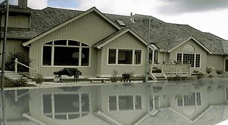

1. Коррекция және бейнелерді өңдеу
2. Фильтр
Коррекция және бейнелерді өңдеу. Бейнені түгелдей коррекциялағанмен қанағаттандырарлық нәтиже әрдайым алына бермейді. Суреттердің жарықтылығы бірдей болмауы немесе түсіру кезінде жарық бағыты дұрыс алынбауы мүмкін. Бұл кемшіліктерді болдырмауға болады. Алдымен бейненің көлемді бөліктерін коррекциялайды. Туынды аймақты Лассо құралымен ерекшелейді. Ерекшеленетін аймақтың шекарасын тегістеу үшін Параметрлер палитрасында қарайтылатын шекараның мөлшерін беру керек. Суреттің өлшеміне байланысты бұл операциядағы қараю көлемі 50-100 пиксельді құрауы мүмкін.
Фильтр. Фильтрлер – бұл бейнені түрлендіруге арналған программалық құралдар. Фильтрлермен жасалатын тәжірибелер – бұл Photoshop редакторындағы ең қызықты жұмыстардың бірі, себебі олар көп жағдайда ең қызықты, күтпеген нәтижелерге әкеліп соқтырады. Фильтрді шақыру меню қатарындағы Фильтр пункті арқылы орындалады. Барлық қолданылатын фильтрлер туғызатын эффектілеріне сәйкес топтарға біріктірілген.
Имитация тобының Фильтрлері фотосуреттерге түрлі-түсті қарындаштармен, акварельмен, майлы бояулармен орындалған суреттер түрін беру үшін қолданылады.
Штрихтер → Жиектердегі акцент немесе Штрихтер → Көлбеу штрихтер фильтрін қолданған кезде өте қызықты живописті эффектілер пайда болады.
Зигзаг → Судағы дөңгелектер фильтрінің көмегімен бейненің су бетіндегі көлеңкесін жасауға болады.
Шу → Ретушь фильтрі бейненің үлкен кеңістігіндегі біртекті емес шулы аймақтарды өңдеу үшін қолданылады.
Жарықтандыру → Жарықтандыру эффектілері фильтрі суретке тек қажетті жарықтылықты беріп қана қоймай, берілген фотосуреттің сәтсіз жарықтандыруын жөндеуге мүмкіндік береді.
Резкость немесе Резкость на краях фильтрін қолдану бейненің анық көрінуін жоғарылатады. Бұл әсіресе бейненің фрагменттерін үлкейткенде өте маңызды болып табылады.
Эскиз → Мел және уголь фильтрлері қара-ақ суретті уголь көмегімен қағазда бейнелеуге мүмкіндік береді.
Рельефті көтерілудің қызықты эффектісін Барельеф фильтрін қолданып алуға болады.
Текстура тобының фильтрлері бейнені кәдімгі матада, қағазды немесе басқа де негіздерде суреттеуге мүмкіндік береді.
Су бетіндегі көлеңке эффектісі
Эффектіні жасау алдындағы берілген бейне. Фильтрдің көмегімен бірнеше операциялар жасалып, бейнеге су бетіндегі көлеңке эффектісі жасалды.

Бақылау жұмысы:
1. Коррекция және бейнелерді өңдеу жолдары
2. Фильтр дегеніміз не?
3. Имитация тобының Фильтрлерінің қызметі қандай?